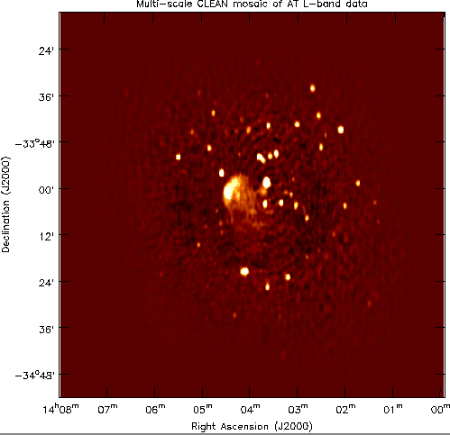
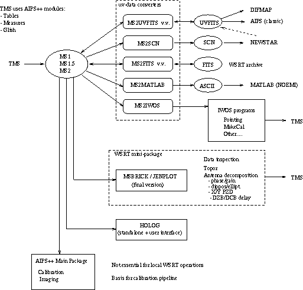
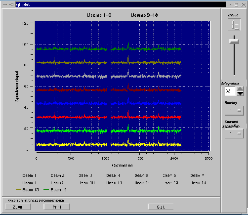

|
AIPS++ Newsletter
August 2000
|
Table of
Contents:
Mosaicing with
Multi-Scale
Clean
Virtual
Images
AIPS++
at the
WSRT
Glish
and
the
Qt widget
library
Project
News
Summary
What's
New
Bob Hjellming:
Professional
Remembrance
|
Mosaicing with Multi-Scale Clean in AIPS++
Mark Holdaway - NRAO/Tucson
Kumar Golap, Miller Goss, Tim Cornwell - NRAO/Socorro
AIPS++
is equipped with a wide array of deconvolution algorithms and
imaging contexts which make for a power imaging environment. In this
article, we show a new mosaic image of the relic radio galaxy 1401-33
generated from ATCA data with imager's Multi-Scale Clean algorithm.

Figure 1:
A mosaic image of the relic radio galaxy 1401-33 made
with imager's Multi-Field Multi-Scale Clean algorithm in
AIPS++.
Have you ever wondered why Clean attempts to break the sky down into a
series of delta functions? That assumption may have reflected our
view of the radio sky when Clean was invented in the 1970's, but it
doesn't match the images today's powerful radio telescopes produce.
Cleaning with delta functions results in notable artifacts when
imaging extended structure. The Non-Negative Least Squares (NNLS)
algorithm can get away from some of these artifacts by solving for all
pixels at once, but is restricted to small image sizes whose "A"
matrices fit into memory; furthermore, NNLS performance degrades as
the image sizes get bigger. So perhaps the maximum entropy method is
better at imaging broad emission on the sky? It is, but MEM has its
own flaw in its positivity bias. Maximum emptiness overcomes maximum
entropy's positivity bias, but still it has some problems with point
sources mixed with extended emission.
The new Multi-Scale Clean algorithm in AIPS++ overcomes many of these problems.
It simultaneously cleans delta functions and other larger components
sizes, so you can clean extended structure both efficiently and
without gross artifacts. Its ability to reproduce extended emission
surpasses maximum entropy's. It doesn't have a positive bias, so it
can image very noisy fields accurately. And now, its packaged in the
multi-field context as well as the single pointing interferometric
context, so you can use it for mosaicing, which is exactly what Goss
and Golap did (see Figure 1).
We all know about deconvolution algorithms -- they are basically solving
an inverse problem. In AIPS++, the imaging context refers
to the context of this inverse problem and determines
how the deconvolution algorithm is managed. For example, the
contexts which exist in AIPS++
include generic single-field interferometry, multi-field or mosaicing,
wide-field (ie, low frequency non-coplanar arrays), single-dish
on-the-fly, and holography. In principle, you can use most of the
deconvolution algorithms named above in each of the imaging contexts
enumerated here. Not all of these context/algorithm pairs are fully
implemented in AIPS++ yet, but the
essential structure is in place, and the interface will soon reflect
the algorithm/context abstraction.
The bottom line of the algorithm/context abstraction for this article
is that when you make a multi-field image in AIPS++, you can choose the algorithm you
wish to do the deconvolution. In the multi-field context, a "dirty
mosaic" and a single approximate point spread function are generated.
The dirty mosaic can be deconvolved with this approximate point spread
function with any standard deconvolution algorithm (Multi-Scale Clean,
for example), but not too deeply! When the deconvolution
proceeds to the point where differences between each fields' actual
point spread functions become important, the multi-field context stops
the deconvolution, an exact subtraction of the modeled emission (in
the Fourier plane, for example) is performed, and the next cycle of
deconvolution proceeds on the residuals. After several such multi-field
cycles, the model image is built up and the residuals are beat down.
For this nine field ATCA observation of 1401-33 at L-band, Goss and Golap
initially used the Clark Clean in a restricted region surrounding
the bright point source near the image center. The Clark Clean component
image was then used as a starting model, with the multi-field Multi-Scale
Clean algorithm working on the residuals. This worked well
in imaging both the very low brightness large scale structure and also
the other point sources in the image.
The Source 1401-33
The extended radio source 1401-33 appears to be a relic radio galaxy
with a steep spectrum (spectral index varies from -1.6 to -3.0 over
the structure). It is believed to be associated with a loose cluster
of galaxies and appears to have been a head tail radio galaxy. The
bright point source (at RA 14:03:38 and DEC -33:58.8) is identified
with the optical galaxy NGC 5419 and does not appear to be related to
the relic. In fact this is one of the mysteries of this source as it
does not have any obvious associated optical galaxy. Another
interesting fact is that it has lowest surface brightness of any radio
structure associated with a cluster environment. Collaborators on
the Australia Telescope Compact Array observations of 1401-33 are
R. Subrahmanyan, M. Goss, T. Beasley, R. W. Hunstead and K. Golap.
Look for more imaging innovations in the next release of
AIPS++.
The details of how the multi-field cycles are controlled in the
imager tool can be found in the multi-field chapter of
Getting Results.
|
Table of
Contents:
Mosaicing with
Multi-Scale
Clean
Virtual
Images
AIPS++
at the
WSRT
Glish
and
the
Qt widget
library
Project
News
Summary
What's
New
Bob Hjellming:
Professional
Remembrance
|
Virtual Images in AIPS++
Neil Killeen - ATNF
The Image tool is the basic AIPS++
tool with which you manipulate images.
It has a capability unique to AIPS++; the ability to create
virtual images. ``Unique but not very handy'', you are probably thinking
at this point...
Let me explain what I mean by a virtual image. The word virtual
is used in a generic sense and there are a few different sorts
of specific virtual images; temporary, reference, expression,
and concatenation.
Temporary Images
We are all used to an image being stored persistently in a disk file.
But that's not the only way an image could be stored. For example, it
could be transiently stored in the computers memory. Of course, when
you access a traditional disk-based image, the data is transferred to
the computers memory for processing. But what I mean here is that the
entire image transiently resides in the computer's memory (not just its
pixels), but the way that you interact with it is just as if it was a
disk-based image.
The following glish fragments show an example of this.
include 'image.g'
#
im1 := shapetoimage(outfile='z1', shape=[10,10])
im1.summary()
im1.stats()
im1.done()
#
im2 := shapetoimage(shape=[10,10])
im2.summary()
im2.stats()
im2.done()
The Image tool im1 is constructed from a shape and is
associated with the disk file z1. It is just a little 10 by 10
image initialized to 0. The two subsequent commands summarize the image
(coordinates, shape etc.) and evaluate some statistics (not very interesting
since its all 0). Now, the Image tool im2 is constructed
similarly, except I left out the argument outfile. This Image
tool is associated with a memory-based, instead of a disk-based image.
Now in fact, im2 is actually what we call a ``temporary image''.
Depending on its size, and the resources of your computer, it will be
either in memory or on disk. Because the image I made above was so tiny
I knew it would be in memory. But the point is, it doesn't matter. It
behaves like other images, you interact with it via all the usual Image
tool functions. The only differences with the disk-based persistent
images are that 1) when you exit glish, the temporary image is deleted
(either from memory or disk) and 2) when you call the done
function (which destroys the Image tool), the disk file z1
remains behind, whereas the temporary image is destroyed.
The temporary image is one kind of ``virtual'' image. It's handy
simply because you don't have the extra book-keeping of looking
after the disk-based image. You use it when you want a transient
image.
Reference Images
A second kind of virtual image is one that references another.
include 'image.g'
include 'regionmanager.g'
#
im1 := shapetoimage(outfile='z1', shape=[10,10])
r := drm.quarter()
im2 := im1.subimage(outfile='z2', region=r)
im3 := im1.subimage(region=r)
Here we have three Image tools. im1 is associated with the disk
file z1. The second is associated with the disk file z2;
it is a copy of the central quarter (by area) of the disk file
z1. The third is a virtual image (because I left out the
outfile argument. It is a ``reference image'' because it actually
references the original file z1. When you access the pixel
values of Image tool im3, you are really accessing Image tool
im1 and hence disk file z1. Note that if you attempted to
delete the disk file z1 via the command
im1.delete(T)
you would find this would fail. This is because the system
knows that somebody else tool im3) has referenced
this image. The same would be true if you attempted
im3.delete(T)
The way to delete this file is to first disassociate the reference
image from z1. Thus
im3.done()
im1.delete()
The reference image is useful because it conserves resources
and I/O operations - when we made im2 the pixels
were physically copied to z2.
Now, we can take this a step further. Consider
include 'image.g'
include 'regionmanager.g'
#
im1 := shapetoimage(shape=[10,10])
r := drm.quarter()
im2 := im1.subimage(region=r)
im3 := im2.subimage('z3')
In this example, the Image tool im1 is a temporary image (and
in memory in this case). The Image tool im2 is a reference
image referencing the temporary (in memory) image ! So we have
both eliminated book-keeping and minimized resources.
If at any point you decode that you really do want your virtual
image to be disk-based, you can always copy it there with the
Image toolfunction subimage as shown for im3.
Expression Images
Within AIPS++ there exists something called the Lattice Expression
Language (or LEL). You can read all about it in the Image tool
documentation and in AIPS++
note 223 (user oriented) and
note 216
(design and implementation description for hard-core C++ enthusiasts.
LEL allows you to create mathematical expressions of Lattices
(images are just lattices of pixels with coordinate information).
This ability is available to the C++ programmer, as well
as to the glish user (the latter is implemented with the former
of course) via an Image tool. Here are two examples:
include 'image.g'
#
im1 := calc(outfile='z1', expr='z2+ (z3+min(z2))')
im2 := calc(expr='z2 + (z3+min(z2))')
The expression takes two images existing on disk called
z2 and z3 and evaluates, pixel by pixel,
a simple expression. It finds the minimum of image
z2, adds that to z3 (logically, not actually)
and then adds that result to the image z2.
Now the Image tool im1 is constructed and associated with
the disk file z1 - the result of the expression
is used to fill that image. However, the Image tool
im2 is another virtual image. It's an ``expression
image''. Again this was done by leaving out the
argument outfile. The expression image
is evaluated every time it is used. So if you
attempted to access some pixels:
p := im2.getchunk()
the expression involving the images would be evaluated and the result
returned to you. If you issued the same command again, the same thing
would happen (there is no caching at this level). This kind
of virtual image can be useful again to conserve resources.
Now the ``expression image'' clearly also references other image disk
files; in this case z2 and z3. And indeed you
will be unable to delete while they are so referenced. An expression
virtual image is really just another sort of reference virtual image,
but sufficiently different I put it in another category.
Of course, you can make expression images from other virtual images:
include 'image.g'
#
im1 := shapetoimage(shape=[20,30])
im2 := calc(expr='2*$im1')
im1.set(1)
im2.stats()
Here we make a temporary image. Then, using the $ substitution syntax
of LEL we make an expression image which just multiplies im1 by
2. We then set the value of all the pixels in the temporary image to 1.
If we then run the statistics function on the expression image, we would
see all the pixels have the value 2.
Note that the expression virtual image is read-only; it makes no
sense for it to be writable.
Concatenation Images
Our final type of virtual image is the ``concatenation image''. This is
another type of reference virtual image. There is a constructor that
enables you to concatenate images along a specified axis. Viz:
include 'image.g'
#
im1 := concat(outfile='z1', infiles="z2 z3 z4", axis=1)
im2 := concat(infiles="z2 z3 z4", axis=1)
Image tool im1 concatenates the specified images along axis 1
and writes the resultant to disk file z2.
Image tool im2 also concatenates the specified images along axis 1.
However, it does not write the result out to disk. Whenever you
access the pixels of im2, it goes back to the original images
and fetches the data from them. This may save you a lot of disk space
at some small access speed decrement. As usual, you can't delete the
referenced images whilst the concatenation images is in existence.
Connection with Object Oriented Design
This facility to create various types of images is intimately related
to Object Oriented Design. There is a C++ class called
ImageInterface. It defines the interface for Image objects. From
ImageInterface we derive various different classes whose behaviour is
different but still conforms to the ImageInterface definition. This
is what is going on here behind the scenes. The class TempImage
handles temporary virtual images. We have the class SubImage defining
reference virtual images. The class ImageExpr defines expression
virtual images and so on. ImageConcat handles concatenation images.
This is what gives us our ability to provide these different flavours
of image.
Summary
There are four different types of virtual image: temporary, reference,
expression and concatenation. These are generated by leaving the
outfile argument unspecified.
It is also worth noting that the temporary, reference and concatenation
virtual images are all writable. For example, if you attempted to
change the values of some pixels in a concatenation image (with function
putchunk), it would actually change the values in the underlying
images from which it was constructed. Only the expression images is not
writable.
|
Table of
Contents:
Mosaicing with
Multi-Scale
Clean
Virtual
Images
AIPS++
at the
WSRT
Glish
and
the
Qt widget
library
Project
News
Summary
What's
New
Bob Hjellming:
Professional
Remembrance
|
The Use of AIPS++ at the WSRT
Jan Noordam, Ger van Diepen, and Tom Oosterloo - NFRA
One of the strengths of AIPS++ is
that it also offers a very powerful software infrastructure and
environment for implementing instrument specific software and
pipelines. The broad functionality of the C++ classes, combined with
the features of Glish, allow to integrate software for very specific
situations with the reduction and calibration capabilities of
'standard' AIPS++.
AIPS++ parts have been playing an
important part in the newly upgraded WSRT for a considerable time.
The role of AIPS++ in the operation
of the WSRT will increase in the next few years. Figure 2 gives an
overview:
-
AIPS++ modules used by TMS.
These include the Table module (which is the basis of the AIPS++ Measurement Set and various
other TMS data structures), the Measures module for coordinate
transformations, and Glish.
-
Various uv-data converters. The data produced by the WSRT is
written in the AIPS++ Measurement
Set format. For archiving, and for transferring WSRT uv-data to
other reduction packages like NEWSTAR, `classic' AIPS, MIRIAD,
DIFMAP, IWOS and MATLAB (used by Delft University for their research
into RFI detection and suppression), a number of format converters
are available. These are all part of
AIPS++.
-
WSRT local mini-package. This is currently used for data
inspection, and the reduction of calibrator observations for setting up the
instrument. It has been written in Glish, but makes use of existing C++
objects. Eventually, most of its functions will be taken over by functions
of the main AIPS++ package.
At this moment, AIPS++ is not yet
used very much for astronomical reduction of WSRT data. This is
expected to increase gradually now that the second release is out,
and as more of the basic uv-data processing functions become
available (the initial strength of
AIPS++ is in new imaging functions which
are not in existing packages). In the meantime, the various uv-data
converters will play an important role.
In the near future, a `data-inspection and calibration pipeline' will
be built in a collaboration between NFRA and the Australia Telescope
National Facility. In the near future, in particular with the IVC, the
data rate of the WSRT will be so high that on-line automatic data
inspection and quality control becomes necessary. This pipeline will
combine the functionality of AIPS++
with locally developed modules.
NFRA will continue to contribute to AIPS++
in various ways, but the
emphasis will gradually shift towards the LOFAR and SKA projects.

Figure 2:
Overview of the current use of AIPS++
at the upgraded WSRT.
|
Table of
Contents:
Mosaicing with
Multi-Scale
Clean
Virtual
Images
AIPS++
at the
WSRT
Glish
and
the
Qt widget
library
Project
News
Summary
What's
New
Bob Hjellming:
Professional
Remembrance
|
Glish and the widget library
Tony Willis - DRAO
The ACSIS correlator project has as its goal the processing and analysis
of spectrometer data in real or near-real time. In order to make this goal
a practical reality we must be able to display both spectrometer data and
telescope data as they are collected so that an observer can quickly decide if
the incoming data is of acceptable quality.
Tests quickly revealed that the glish (and pgplot) interpreter
provided with AIPS++ consumed too
large a fraction of CPU resources while trying to keep up with the
ACSIS data rate of up to 10 Mb / sec. Developing a c++ based glish
client that made direct calls to pgplot improved things a bit, but now
the client consumed CPU resources! So we had to find some other way of
producing a display capable of handling a high data rate, while not
consuming all the CPU resources on a machine. (Here, my remarks are
not meant to disparage either glish or pgplot. Neither package was
ever designed for high speed real-time displays.)
While net surfing during July 1999, I became aware of a
two-dimensional plotting package called qwt, one of whose demo
programs was a strip chart display similar to that required by ACSIS
for showing telescope data as a function of time. Some playing with
the qwt strip chart demo revealed that it could probably keep up with
the ACSIS data rate, but typically consumed only ten to twenty percent
of the CPU resources of a 450 MHz PII computer. So we decided to see
if qwt (developed by Josef Wilgen, jwlg@mail.desy.de) could be
successfully integrated with a glish c++ client.
Qwt uses the Qt widget library, which is copyrighted by Troll Tech AS
http://www.trolltech.com
a Norwegian company. Both Qt and qwt are
written in c++ and are free for non-commercial use. It proved quite
easy to integrate glish events with the Qt event handler by means of a
Qt class called QSocketNotifier. The whole process has been made
transparent to an AIPS++ programmer
by means of a class called QtGlishSysEventSource, which inherits from
both the Qt QObject class and the AIPS++ GlishSysEventSource class. The
code for this class has been checked into the
AIPS++ development system in directory
/aips++/code/hia/implement/QtGlishEvent. Unfortunately the
documentation for the class is rather sparse, something this note
attempts to rectify.
The following c++ code sample demonstrates how a widget based on qwt
and Qt that we have developed for ACSIS to display spectra can be
integrated into a glish c++ client. Every time this client is sent a
glish 'update_display' event, containing a beam number and a spectrum,
the glish callback function 'update_plots' decodes the data associated
with the glish event and forwards the spectrum to the screen display
based on Qt/qwt.
/****************************************************************
**
** Main Program for ACSIS Qt spectrum plotting program
**
****************************************************************/
#include < math.h >
#include < aips/Arrays/Vector.h >
#include < aips/Arrays/IPosition.h >
#include < aips/Glish/GlishRecord.h >
#include < aips/Glish/GlishArray.h >
#include < aips/Glish/GlishValue.h >
#include < qapplication.h >
#include < qpushbutton.h >
#include < qscrollbar.h >
#include < qlcdnumber.h >
#include < qlayout.h >
#include < qfont.h >
// header file for the class Mainplt: a Qt / qwt plotter for ACSIS spectra
#include
// header file for the class QtGlishSysEventSource that combines glish
// and Qt event handling
#include
Bool First = True;
QtGlishSysEventSource *glishStream = 0;
Mainplt *plotter = 0;
// standard glish callback function
Bool update_plots(GlishSysEvent &e, void *)
{
// Extract data (beam number and spectrum) from incoming glish record
GlishRecord glishRec = e.val();
Int beam_no;
if (glishRec.exists("beam_no")) {
GlishArray tmp;
tmp = glishRec.get("beam_no");
tmp.get(beam_no);
}
Vector spectrum;
if (glishRec.exists("rtd_spectrum")) {
GlishArray tmp;
tmp = glishRec.get("rtd_spectrum");
tmp.get(spectrum);
}
// If this is the first spectrum, construct the plotter widget,
// from an ACSIS class imaginatively called Mainplt.
// The Mainplt class makes use of Qt and qwt classes.
// Note that the 'glishStream' pointer is passed into the Mainplt
// constructor. This makes it possible for glish events to be issued from
// A Qt callback function in the Mainplt widget.
if (First) {
Int spec_size = spectrum.nelements();
plotter = new Mainplt(glishStream, spec_size,0, "mainwin" );
// get the plotter widget up on the screen
(*plotter).show();
First = False;
}
// show the spectrum on the plotter display
(*plotter).updateEvent(beam_no,spectrum);
return True;
}
int main( int argc, char **argv )
{
// every Qt application requires exactly one object of class
// QApplication. This object is responsible for all event
// handling.
QApplication a( argc, argv );
// get a QApplication to also handle glish events
// by means of a QtGlishSysEventSource object. The
// QtGlishSysEventSource class inherits from both
// the QObject and the GlishSysEventSource classes.
glishStream = new QtGlishSysEventSource (argc, argv);
// define callback response to glish 'update_display' event
(*glishStream).addTarget(update_plots, "update_display");
// enter Qt event loop
return a.exec();
}
The important thing to note from the 'main' function above, is that
its structure looks quite similar to a standard glish c++ client, except
that events are handled by the Qt event loop and 'glishStream' points
to a member of the class 'QtGlishSysEventSource'.
A sample display of the ACSIS spectrum display in action is shown
in Figure 3.

Figure 3:
Click on figire for higher resolution.
ACSIS spectrum display showing pseudo spectra
from a 16 feed focal plane array being sent to the screen every
50 millisec. The various buttons / sliders etc shown on the display
are from the Qt widget set. The Qwt package is used to generate the actual
plot.
So far AIPS++
GUIs have all been written as glish scripts by using the
Tk widget set that has been incorporated into glish by Darrell
Schiebel. If the AIPS++
project ever does decide to use a widget set
directly inside a glish c++ client I can certainly recommend the Qt
widget set. It is extremely easy for inexperienced GUI programmers,
but who have had exposure to c++, to learn to program with Qt. A
second year undergraduate computer science student who had had two c++
courses, programmed large fractions of the ACSIS spectrum display in a
2.5 month work term. There is even an O'Reilly book on Qt,
"Programming with Qt", by Matthias Kalle Dalheimer (ISBN
1-56592-588-2). However, the documentation, including tutorials and
examples, that comes with the Qt distribution is so good that the book
is not really necessary for a good understanding of Qt. The original
version of qwt is available from the TrollTech ftp site
ftp.trolltech.com.
However qwt requires some patches to work with Qt
V2.0 and later. A patched version is available from
ftp.drao.nrc.ca in
directory pub/twillis as file qwt_2.tar.gz.
|
Table of
Contents:
Mosaicing with
Multi-Scale
Clean
Virtual
Images
AIPS++
at the
WSRT
Glish
and
the
Qt widget
library
Project
News
Summary
What's
New
Bob Hjellming:
Professional
Remembrance
|
Project News Summary
Tim Cornwell - NRAO, Socorro
On March 16, 2000, the Jodrell Bank Observatory officially rejoined
the AIPS++ consortium as a
partner. Jodrell Bank was one of the original founding partners in the
consortium but withdrew in 1995. We are very pleased to welcome
JBO/MERLIN back and look forward to working together.
In early May, we issued the second release, version 1.3, of AIPS++. This completes a 6 month
development cycle that started after the first release, version 1.2,
in October 1999. Our goal in this cycle has been towards scientific
completeness. Version 1.3 has numerous changes in most parts of the
package, but particularly in calibration and imaging of synthesis
data, image manipulation and viewing. In addition, many new tools,
such as a general purpose fitter, have been provided. A fuller
description of the changes is found in the release notes and
development report for version 1.3. We have now started on the
development of version 1.4 which we intend to release in October
2000. Our goal in version 1.4 is to complete the provision of
reduction capabilities for both connected element interferometers and
single dish radio telescopes, with special emphasis being paid to
improving the usability of these parts of the package. Planning for
version 1.4 was aided by a gathering of consortium developers in
Socorro on April 26 - April 29, 2000. Our intention is that such
face-to-face developers' meetings will occur every other development
cycle.
In January 2000, we hosted in Socorro a meeting on "Pipeline reduction
in AIPS++". This was a small informal workshop on the development
of pipelined calibration and imaging systems for radio telescopes.
Representatives of both consortium and non-consortium telescopes
attended, and gave presentations on the experience of and needs
for pipelines. We achieved a highly satisfactory degree of
convergence of views during this short workshop, and internally
we have proceeded to coordinate work on pipelines at the various
consortium sites. It is clear that the tool-based approach used
in AIPS++
is highly suited to the development of pipelines
tuned to the needs of different telescopes and scientific
questions.
In Personnel News:
- Barry Maguire joined the JBO/MERLIN and their AIPS++ group. To fulfil the contribution
of JBO/MERLIN to the AIPS++
Project, Barry will participate in the development of synthesis VLBI
capabilities within the package. As part of learning the package,
Barry visited both Dwingeloo and Socorro. Since he started with a firm
background in C++, he was able to make very rapid progress. He is
currently developing a filler for MERLIN data, and will then turn to
more general synthesis development.
- The AIPS++ Project at NRAO
hired Toney Minter and David King into the NRAO/AIPS++ visualization project, and hired
George Moellenbrock to work in synthesis development in Socorro
(replacing Peter Barnes who left at the end of 1999).
- Kate Weatherall left the NRAO AIPS++ group in February 2000 as part of
a budget-mandated reduction in force throughout the Observatory. We
all enjoyed working with Kate and will miss her.
- David Barnes has left the ATNF/Epping
AIPS++ group and has returned to
his home town, Melbourne, to work at the Swinburne Computer Center.
He will remain at work half time on AIPS++ until September. David has made
tremendous contributions in the development of the Display Library in
AIPS++, and to the general
package. We'll miss him a lot, and hope that he will find a way to
keep in touch in the future.
- Doug Roberts of NCSA has left to join the Hayden Planetarium
in Chicago. Doug has made significant contributions to many areas
but particularly in the parallelization effort. Doug had contributed
for a number of years, and we are sad to see him go. He will be replaced
as NCSA AIPS++
manager by Ray Plante. His work on parallelization
will be picked up by Dave Mehringer.
- Oleg Smirnov has joined the AIPS++ group in Dwingeloo, where he will
be working on general synthesis development.
Finally, on a personal note, on May 1 2000, I took on an additional
role at NRAO: Associate Director for Data Management. In this new
position, I am responsible for data management for all NRAO
telescopes. I expect AIPS++ to play
a key role in this effort, and will continue as AIPS++ Project Manager. The one drawback
of these new responsibilities is that I will have less time for
development in the package, which is something that I find very
enjoyable and rewarding. However, I look forward to being able to use
AIPS++ as a resource in this new
and demanding initiative at the NRAO.
|
Table of
Contents:
Mosaicing with
Multi-Scale
Clean
Virtual
Images
AIPS++
at the
WSRT
Glish
and
the
Qt widget
library
Project
News
Summary
What's
New
Bob Hjellming:
Professional
Remembrance
|
What's New: April - July 2000
Athol Kemball - NRAO, Socorro
-
In this period the table system infrastructure has been improved in
several key areas, including enhancements in storing measures
and quanta in AIPS++
tables, and in improvements to the Table Query Language (TAQL). TAQL
can now be used on any memory-based data structure, rather than only
disk-based tables. A GUI widget has also been added to help users form
TAQL selection strings, using a query-by-example idiom. It includes
advanced features to allow more complex query commands.
-
Several new capabilities have been added in the image module,
including functions to: i) perform an FFT on an image; ii) regrid an
image to a specified template; iii) modify an image by a source
component model; and, iv) support reading of Miriad and GIPSY format
images. Additional and more uniform support has been added for virtual
images within the image module as a whole, as described elsewhere in
the newsletter.
-
A new tool, imagepol.g, has been added to provide the capability for
basic polarimetric image analysis. The imagefitter tool has been
extended to support the fitting of multiple, simultaneous components,
correct handling of Gaussian components in non-linear coordinate
systems, and better handling of units such as Jy/beam and Jy/pixel.
-
Mosaicing support has been expanded in imager, by adding new utility
functions, specialized mosaic weighting and in a broader range of deconvolution
algorithm support in different imaging contexts. The simulator has
been improved in its general capabilities, and in the range of
supported error models.
-
Improvements have continued in the user interface and toolmanager, but
substantial design changes are not planned until a larger user group
has had the opportunity to use the system in its current form.
-
A 64-bit build has been implemented on the SGI IRIX systems to allow
full use of the large memory model for the most computationally
challenging projects.
-
Work has continued in the calibrater tool, primarily in the area of
testing with a range of real data. Specialized test scripts for BIMA
data have also been developed.
-
Single-dish work in dish continues, as well as in GBT commissioning
support. New features have been added to the GBT filler in particular.
-
The infrastructure of the display library module has been expanded, as
has the viewer application.
|
Table of
Contents:
Mosaicing with
Multi-Scale
Clean
Virtual
Images
AIPS++
at the
WSRT
Glish
and
the
Qt widget
library
Project
News
Summary
What's
New
Bob Hjellming:
Professional
Remembrance
|
Bob Hjellming: A Professional Remembrance
Tim Cornwell - NRAO, Socorro
Bob Hjellming, a scientist at NRAO Socorro, died of natural causes while
scuba diving on July 29, 2000. Bob had been a member of the NRAO Basic
Research staff since 1968. Bob came to the Observatory as a theoretician
studying H II regions and shortly thereafter recognized the opportunity to
detect radio emission from stars, a field he and Cam Wade pioneered. For
the next 30 years he studied stellar emission at radio and X-ray
wavelengths.
Bob had many talents and interests, one of which was computing, and in
particular astronomical computing. He was a keen fan of the computer
languages of Niklaus Wirth, particularly Oberon, and had an ongoing
project to write astronomical utilities in Java. With this background, it
was natural he became associated with the AIPS++
Project. Prior to the
official start of the project, he was responsible for drawing up the
consortium-wide user specifications for AIPS++.
He then participated in
the first six months of intensive work in Charlottesville in early 1992.
During this period, he formed close friendships with a number of people
still in the project and became AIPS++'s
first Project Scientist, a
position he held until 1993. More recently, he was an early user of
AIPS++,
and produced the "micro-quasar" images seen on the cover of the
release 1.3 CDROM. He brought to all of these roles his own mixture of
strong scientific focus, keen interest in computing technology, and belief
in the importance of communication. Most recently he contributed to
AIPS++
by editing our newsletter since the first publication in February 1998. In
this role, he spanned the gap between scientists and computer
professionals, finding ways for both to talk to each other. We will miss
him.
Mark Holdaway
|
|